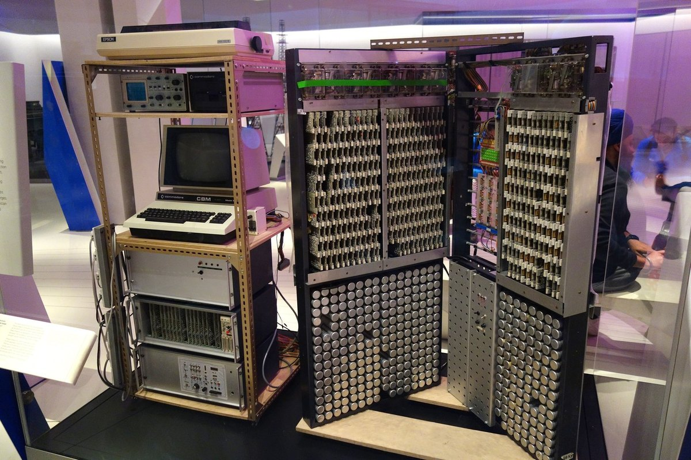
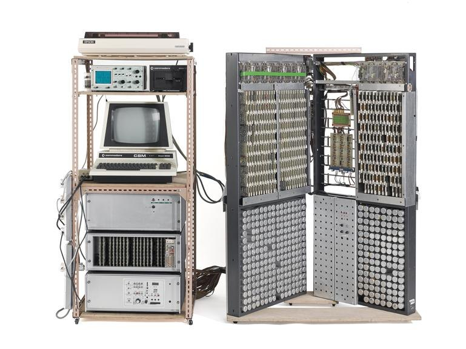

The Sea That Was Made of Electricity
Ishiguro's storm surge model didn't simulate the North Sea — it was a small electrical copy of it, and you interrogated it by changing its physics. A Commodore CBM 8032 set the tides; an oscilloscope showed what the water would do.

Almost every computer here stores a description of the world and computes about the description. You draw a shape, it holds coordinates. You set an oven to 350, it holds a number. Even the Yeoman plotter, which refuses to draw you a map, keeps a set of numbers and steers your hand toward one of them.
The Ishiguro Electronic Storm Surge Model does not do this. It holds no description of the North Sea. It is a small electrical copy of the North Sea. The difference between those two sentences is the whole story.
A flood, then a circuit
After the 1953 North Sea flood killed more than two thousand people, Britain's National Institute of Oceanography was asked to understand surges properly. In 1957 the Japanese oceanographer Shizuo Ishiguro arrived at its lab in Wormley, and he would not write an equation and solve it on a machine. He would build the sea.
Ishiguro divided the North Sea into roughly eighty points and wired each to its neighbours through resistors, capacitors and inductors, chosen so the flow of electricity behaved like the flow of water. Voltage stood for water height; the depth of the sea, the coastline, the drag of the seabed, the Coriolis force of the rotating Earth and the pull of the tidal Moon all became values of components in a hand-wired lattice. It stood about 1.8 m tall on two panels angled in a shallow V, so a modeller could walk around and reach the back of the grid. From 1960 until about 1983 it answered, in volts, what a storm would do to the coast.
You don't type the answer, you poke the physics
On a normal computer, asking a question means describing it. You enter a wind speed, a pressure drop, a starting tide, and the machine reads your numbers, runs a procedure, and hands back an output. Your statement of the world and the world are two different things, and the program is the bridge.
On Ishiguro's machine there is no bridge, because there is no gap. To ask "what happens if this storm arrives at high tide instead of low?" you do not change a number in a model of a sea. You change a physical property of the sea itself. You patch a connection, adjust a generator supplying the tidal input, or reach behind the panel and swap a component. The machine's behaviour changes because its physics changed, not because a variable in a data structure changed.
That is a genuinely rare thing for an interface to be. Everywhere else in this collection, the human manipulates a representation and trusts a machine to keep it faithful. The Technics turntable lets your hand into the recording itself, but the recording is still stored as a groove separate from you. Here your hand goes into the model, and the model and the thing modelled share their structure rather than a description of it.
The odd front end: a personal computer bolted to the sea
By the machine's later years a Commodore CBM 8032 — a PET-line desk computer with a monochrome green screen and calculator-style keyboard — sat alongside it with 5.25-inch floppies, setting up the runs and feeding the time-dependent parameters into the grid.

I love this pairing because it is so lopsided. A digital computer with a keyboard, a screen and a disk drive arrived, and the obvious move would have been to replace the model. Instead it became the model's secretary: the CBM 8032 prepared the inputs — which tide, which storm, which scenario — while the answering stayed stubbornly electrical.
There is a lesson in that asymmetry. The personal computer had not yet earned the authority to be the world. It was fast enough to be a convenient clerk, but the modellers did not trust it to be the sea. They trusted the sea.
The output was a photograph
The answer did not arrive as a table of water levels, a saved file, or a plot on a screen. It arrived as a live trace on an Advance Instruments OS-240 oscilloscope, sweeping while the model ran, recorded by pointing a camera at the tube. The result was not an object but a transient signal, and its permanence depended on a photographer's timing. You did not open the answer. You caught it.
Elsewhere in this collection a machine leaves a durable record you can walk away with and read at leisure. Here the trace was a window onto a running process, and the photograph was the only copy.
Why it died
Digital computers that could solve the surge equations existed well before 1983, so Ishiguro's choice was not naive: he argued a continuous circuit had no time step to get wrong, where a numerical model marches the sea forward in discrete jumps. What killed it was not a flaw but Moore's law. Once digital machines were fast and cheap, the case for a fragile, hand-wired sea that could not be saved or replayed became a personal one. When Ishiguro retired in 1983 the machine was set aside; it now sits in the Science Museum's Mathematics Gallery, a specimen of a road the field did not take.
Why I keep coming back to it
Almost every other exhibit here is a map: buttons that stand for letters, a dial that stands for a temperature, a screen that stands for a scene. The Three Mile Island control room is the warning about where that can lead — a map can do terrible damage when it lies. This machine is the opposite end of the same axis. Its interface is not a map of the sea. It is the sea, at one to a hundred thousand, made of copper and glass.
I don't think I'll ask a laptop what if the storm comes at high tide? again without remembering that someone once answered it by putting his hands into a physical copy of the water, watching a green line climb, and photographing it before it faded.